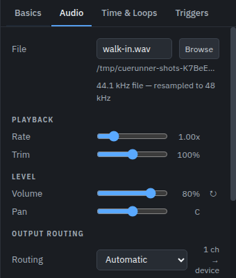

Working with sound
Everything an audio cue can do, in the order you usually need it.
The file, and what plays of it

Browse picks the file; the folder it sits in is written under the name. WAV, AIFF, FLAC, MP3, M4A and OGG all play. A file at a different sample rate to the device is resampled as it plays — pitch and tempo are unchanged.
Start time and End time, on the Time & Loops tab, are the part of the file this cue plays. Leave the end empty to play to the end of the file. The waveform in the dock shows both, and you can drag them there.
Trim silence moves the start and end to the first and last sound in the file, so a cue fires on the sound rather than on whatever the editor left in front of it. It can be the default for new cues in Settings → Audio.
Level, pan and fades
Volume and Pan are the cue's own, applied as it plays. Fade in ramps it up from silence over that many seconds when it starts.
To change a level while a cue is already playing, use a fade cue pointed at it: a target, a level to reach, and a time to take getting there. Tick Stop when done and the fade becomes a fade-out — the usual way to take music out under dialogue.
A stop cue stops a target at once, or fades it out first over a time you set. Wait for fade holds the show until that fade has finished, which matters when the next cue starts the moment this one is done.
Loops and vamps
Loop count on the Time & Loops tab repeats the section between
the start and end times. 0 plays it once; a number plays it that many
extra times; -1 loops for ever, which is a vamp.
A vamp holds until you let it go. Make this a vamp sets it up, and a devamp cue aimed at that cue releases it: the loop finishes the lap it is on and plays out to the end of the file. That is the underscore that holds for a scene change of unknown length and then resolves properly.
Where the channels go
Output routing on the Audio tab has three modes:
- Automatic — the file's channels play in order on the device. Stereo file, stereo out.
- Matrix — you say which file channel feeds which device channel, and at what gain. One channel can feed several outputs, and several can meet on one. This is how a mono effect reaches four zones, or a stereo file lands on outputs 7 and 8.
- Silent — the cue runs and takes its time, and sends nothing. Useful as a placeholder that keeps a sequence's timing honest.
The device itself, its sample rate, buffer and channel count are in Settings → Audio, with what the engine is actually doing underneath them.
On Windows, Audio system above the device picks how the sound leaves the machine: Windows audio, the platform's own mixer, or ASIO, which drives an interface through its own driver instead. Everywhere else the row is the platform's own stack and nothing more. ASIO is the one for a rig whose interface has its own driver — a professional one, or a virtual one like Dante Virtual Soundcard — and for setting the buffer on the interface rather than letting Windows mix. While the show is open that driver is held by Cuerunner alone, and its own control panel owns the sample rate, the buffer and the channel count; Cuerunner reports what it was given, and the latency beside it is the driver's own, marked (driver). One driver at a time, and the whole interface's outputs, up to 32 channels. A machine with no ASIO driver says so when you choose it, and a driver that asks for a reset reopens the device — the show stops for that instant and the Audio tab says why.
Next
Running the show, or the field-by-field reference for audio, fade, stop and devamp cues.